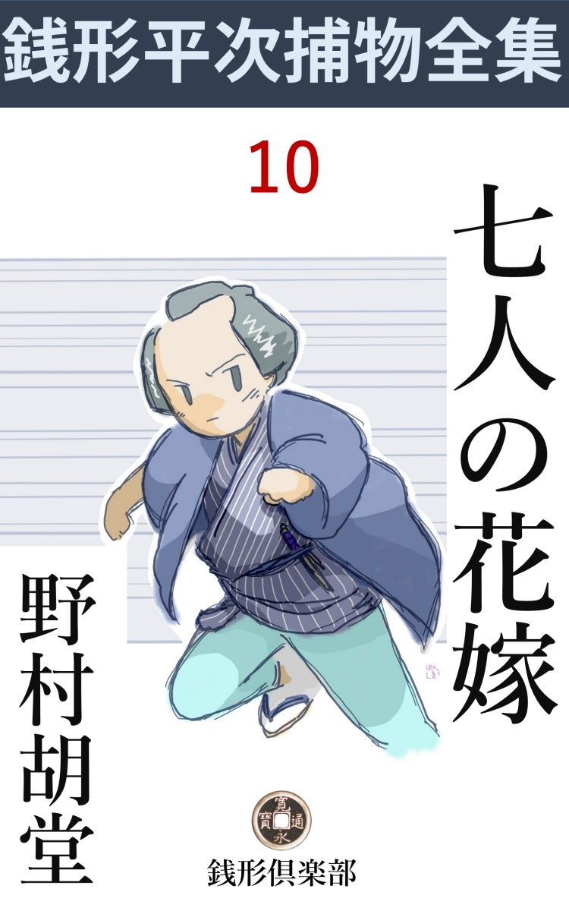
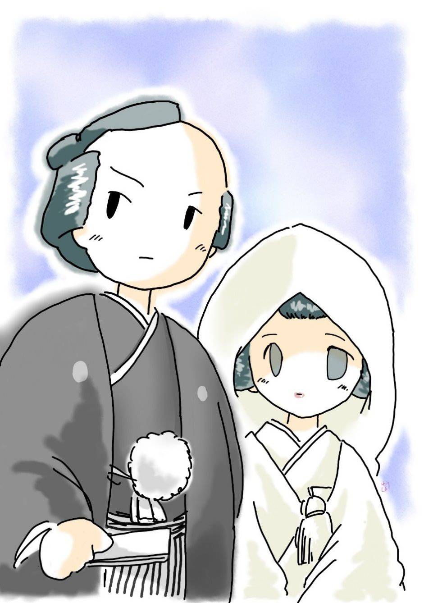

| 七人の花嫁: 銭形平次捕物全集第10話 (銭形倶楽部) | |
| 野村胡堂 | |
| ZENIGATA CLUB (2018) | |

一
「やい、八」
「何です、親分」
「ちょいと顔を貸しな」
「へ、へ、へッ、こんな面 でもよかったら、存分に使って下せえ」
「気取るなよ、どうせ身代りの贋首 ってえ面じゃねえ、顔と言ったのは言葉の綾 だ。本当の所は、手前 の足が借りてえ」
捕物の名人と謳 われるくせに、滅多 に人を縛ったことのない御用聞の銭形の平次は、日向 でとぐろ を巻いている子分のガラッ八にこんな調子で話しかけました。
松は過ぎましたが、妙に生 暖 かいせいか、まだ江戸の街にも屠蘇 の酔 が残っているような昼下がり、中年者の客を送り出すと、平次はすぐ縁側へ廻って、ガラッ八を居 睡 りから呼び起したのです。
「へエ------、どこへ飛んで行きゃアいいんで------」
「今の話を聞いたろう、あの客が長々と話しこんだ------」
「いいえ」
「聞かねえ？」
「人の話なんか聞きゃしませんよ、そんなさもしい八さんじゃねえ」
「いい心掛けだ、------と言いてえが、実は居睡りをしていたんだろう」
「まアそんなところで、------何しろ日向は暖 えし、懐は涼しいし、じっとしていりゃ、睡くなるばかりで------」
「呆れたものだ。まアいいやな、俺が詳 しく復 習 ってやろう」
「お手数でもそう願いましょうか」
「黙って聞けよ」
「へエ------」
平次の態度には例 もに似気なく真剣なところがあるので、無駄の多いガラッ八も、さすがに口を緘 んで、親分の顔を見上げました。
「今此処 へ見えたのは、十軒店 の八 百 徳 の主人だ。一人娘のお仙を、同じ商売仲間の末広町の八百峰の跡取息子に嫁にやるについて、俺の力が借りたいと言うのだよ」
「悪い虫でも附いているんでしょう、どうせ当節の娘だ」
「そんな話じゃねえ。聞けば近頃、神田から日本橋へかけて、花嫁がチョイチョイ消えてなくなるそうだな」
「それなら聞きましたよ。祝言の晩に行方知れずになった花嫁は、暮からこっち、二人くらいあるでしょう。どうせ言い交 した男でもあって、いよいよという晩に花 嫁 姿 で道行を極めたんじゃありませんか。土 壇 場 に据 えると女の子は思いの外強くなりますからね」
「ところが、八百徳の主人の話では、消えた花嫁が三人もあるそうだよ」
「妙に気が揃 ったものですねえ」
「そんな暢気 な事を言っちゃいられない。一と月や半月のうちに、花嫁が三人も行方知れずになるというのは、少し可怪 しくはないかな、八」
「そう言えばそうかもしれませんね」
「どこの家でも、娘に男があって逃げたと思い込んでいるから、世間体を憚 って表沙汰にはしないそうだが、八百徳の主人は、どうも自分の娘も消えてなくなりそうで心配でたまらないと言うんだよ」
「成程ね」
「そこで手前 へ頼みというのは------」
「そのお仙とかいう娘に、虫が附いてるかどうか嗅 ぎ出して来いというんでしょう」
「そんな気障 な用事じゃない。娘の身持は八百徳の主人が引受けるって言うから、差し当りそれを信用するとして、手前はソッと嫁入の行列に蹤 いて行って、一と晩見張っていさえすりゃいいんだ」
「成程、こいつは、嫌な役目だ」
「何だと、八」
「知恵も銭も要らねえ代り大した辛 抱 役 だ。花嫁に蹤いて行って、三々九度から、床 盃 まで見せられた日にゃ、全く楽じゃないぜ」
「贅沢を言うな」
「これでも独り者ですぜ、親分」
「独り者だから、そんな場所によく眼が届 くんだ、役不足なんか言っちゃならねえ」
「へッ、助からねえな」
ガラッ八は文句を言いながらも、頭の中では、その晩の冒険に対する、いろいろの計画をめぐらしておりました。
二
日本橋の十軒店 から神田の末広町まで、自動車を飛ばせば五分くらいで行ってしまいますが、昔の花嫁の行列はそんな手軽なわけにはゆきません。
町内の駕籠 清 から別仕立の駕籠が五挺、花嫁と、仲人 夫婦と嫁の附添と、親類の重立った者が乗って、あとは定紋 の附いた提灯 を挾 んで、思い思いに歩くところですが、時節柄物騒というので、駕籠だけを飛ばせ、仕出しはゆるゆる後から練 って行こうという寸法、韋駄天 のような粒選りの若い者に担 がせた五挺の駕籠は、江戸の街の宵 霜 を踏んで、丁度明神下から鼠屋 横町へ抜けようとした時でした。
闇の中から不意に飛んで来たのは、一本の棒、これが花嫁の乗った真ん中の駕籠の、先棒の股 の間へサッと入りました。
「あッ、何をしやがる」
と言った時は、もう見事に突んのめって、弾 みの付いた駕籠は、往来の真ん中へドタリと落されました。
「それ出た」
それくらいのことは心得た後棒の若い者、息 杖 を取って花嫁の駕籠の前に立ち塞 がりましたが、相手はその出鼻を挫 くように、横合から飛出して、胸のあたりをドンと突きました。
何分宵闇の中に起った不意の出来事で、それに、曲者は恐ろしい手練 、後棒の若い衆は思わず跳ね飛ばされて尻餅 をつくと、その間に飛付いた、第二、第三の男、物をも言わずに花嫁の駕籠を引っ渫 って、引摺 るように、横手の狭い路地の口へ------。
「野郎、待ちゃがれ」
先棒は漸 く起き上がりましたが、向 脛 を強 かにやられて、急には動けません。前後の四挺の駕籠は、この時漸く下 されて、八人の若い者が、
「何をしやがる」
息杖を振りかぶって、八方から花嫁の駕籠を追いかけました。幸い路地は三尺の抜裏で、駕籠は容易に通りません。花嫁の駕籠は少し斜 に、その口を塞 いだまま放り出されたところへ、十人の威勢のいいのが、十ぽんの息杖を振りかぶって、すかさず追いすがったのでした。
別に町駕籠を仕立てて、花嫁の行列の直ぐ後に続いたガラッ八は、この騒ぎを見ると転がるように降り立ちました。
「到頭出やがったか、逃すな」
それでも商売柄、一番先に路地の口に飛付きました。が、花嫁の駕籠が入口を塞いで急には曲者の後を追うことも出来ません。
「えッ、面倒 臭 え」
駕籠を飛越して路地の闇に入ると、鼻の先に通せん坊をしたのは恐ろしく巌乗 な木戸。
「やい、ここを開けろ」
押しても叩いてもビクともすることではありません。
そのうちに、四挺の駕籠から飛降りた仲人夫婦やら附添の者、これは一番先に花嫁の安否 ということが頭へ響きます。
飛付くように駕籠の垂 を押上げて、
「お仙さん、驚いたろう」
と見ると、中は空っぽ。
「あッ」
咄嗟 の間に、駕籠の中から花嫁は攫 われてしまったのでした。
三
八百峰の近くまでたどり着いて、いくらか心持に隙 の出来たところを狙 ったやり口や、抜裏を利用して、駕籠で入口を塞 いだ細工 などを見ると、容易な曲者ではありません。
「親分、何んとも申訳がねえ、俺は腹でも切りてえ」
すっかり恐入って報告をする八を宥 めるように、
「いや、その様子では俺が行っても失敗 ったかもしれねえ。手離せねえ用事があったにしても、手前 一人やったのが間違げえだ」
平次はそんな事を言っております。
時を移さず、鼠屋 横町の抜裏から、八百峰の立ち騒ぐ人達の様子、驚き呆 れる十軒店の八百徳まで廻って見ましたが、手掛りらしいものは一つもありません。
「六尺棒を若い衆の股 の間に投げ込んだ手際 じゃ、ザラの泥棒や人さらいじゃねえ------」
という噂を聞いたのが精々、平次は何の得るところもなく、暁方近くなって引揚げて来ました。
その頃は、諸大名の門番や、見付の番人は言うに及ばず、渡り中間、軽輩 な士分の者まで、一種の武器として、棒を使ったもので、駕籠屋の股へ棒を放り込むくらいの事は、ちょっと心得のある者なら、誰だって出来ます。
花嫁は評判の堅い娘で、八百降の総領とは許嫁 同士、色恋の道行でないことは、口 善 悪 ない近所のお神さん達までが牡丹 餅 判 を捺 します。
それに、盗まれた花嫁は、暮から勘定して四人目、手口はそれぞれ違いますが、兎に角、余程深い企 らみのあることは、鼻の良い平次には、判り過ぎるほど判ります。
それから三日目。
「親分、聞きなすったか」
朝のうちから、ガラッ八が怒鳴 り込んで来ました。
「何だ、八。相変らず騒々しい」
「石原のも失敗 ったんですとさ」
「何？」
「昨夜柳原河岸で、石原の利助親分があの大きい眼を光らせている中から、五人目の花嫁が攫 われたって言いますぜ。材木河岸の美倉 屋 の娘で、今度はたいした容貌 だ」
「フーム」
「これで五分と五分だ。石原のでさえ馬鹿にされたんだ、八五郎ばかりが失敗 ったんじゃねえ------、態 ア見やがれだ」
「馬鹿野郎ッ」
「へッ」
「石原の兄哥が失敗ったからって、手前のドジの言訳になるか」
「へエ------」
「俺はそんな心掛の人間は大嫌いなんだ。こっちはこっち、石原の兄哥は石原の兄哥だ。人の失敗を喜ぶような野郎は、俺のところにいて貰いたくねえ」
「へエ------」
「手前は人間はガラガラして、まことに出来のよくねえ野郎だが、悪気 のないところだけが取柄 だったんだ」
「へエ------」
平次の怒りは、何時になく峻烈 を極めました。さすがのガラッ八も、あまりの風向に、暫くは口も利けません。
「さア、出て行きゃアがれ。俺はそんな根性の曲った野郎を見ていたかアねえ」
「親分、成程、そう言われてみると、あっしが悪かった。勘弁しておくんなさいまし」
「ならねえ」
「そう言わずに、親分」
「詫 びを入れたきゃア、石原の兄哥へ行ってそう言ってみろ」
「------」
「間誤間誤 しやがると、向 脛 をカッ払うぞ。石原の兄哥の手柄を喜ぶような心持になったら、改めて逢ってやる」
あまりの剣幕に驚いたか、ガラッ八は二つ三つお辞儀をすると、怯 えた猫の仔のように、後ずさりに格子の外へ飛出してしまいました。
日頃温和な平次が、こんなに怒るのは、何か仔細 のあることでしょう。人のいいガラッ八は、押して聞き返す勇気もなく、妙に諦 め兼ねた涙ぐましさで、何処 ともなく立去ってしまいました。
四
間もなく、第六人目の花嫁が盗まれました。新 革 屋 町（今の松下町）の染物屋の娘お辰 、同じ神田鍋町の酒屋伊 勢 直 へ嫁入りさせましたが、どこでどう摺 り替えられたか、向うへ行って、綿 帽 子 を取って見ると、花嫁が変っていたというのです。
家を出て駕籠に乗せるまで、仲人 は花嫁から手を離さず、伊勢直への道中は、時節柄出入りの頭 や職人に頼んで厳重に守らせ、駕籠を下りると、仲人の外に、多勢が人垣を作って送り込んだのですから、途中で摺り替えられる筈は万に一つもあるとは思われません。
その上、何ということでしょう。この晩は双方 から頼み込まれて、特に銭形の平次が乗り出し、宵から嫁の姿を見張って一刻も綿帽子から眼を離さなかったのです。
嫁のお辰は、里方の染物屋にいるうちに替えられたに相違ありませんが、それが、どこで、どうして入れかわったか、さすがの平次にも、全く見当が付きません。
お辰の代りに、花嫁に仕立てられたのは、どこから来たともなく、二三年この方 、神田あたりを彷徨 い歩く女乞食のお六、これは金看板の白痴 で、何を訊いても一向取り止めのない始末です。
「お前はどこから------誰が連れて来たんだ。言わないか」
「言わないよ」
「言わなきゃア打つよ、呆 れた馬鹿だ」
寄ってたかって責めると、
「黙っていさえすれば、伊勢直の若旦那のお嫁さんにするって言われたんだ。言うもんか」
この調子では全く手が付けられません。
尤 も、評判娘のお辰とは似もつかぬ醜い容貌で、年も三十幾つかは越したでしょう。綿帽子さえなかったら、お辰と間違えられるお六ではありませんが、女乞食にしては様子が如何にも華奢 なのと、一言も口を利かなかったので、伊勢直へ連れ込むまで、誰も気が付かずにいたのでしょう。
それよりも重大な原因は、近頃の物騒な噂に怯 えて、人間という人間が、あまりに緊張しきっていたために、思わぬ心理的欠陥 に乗ぜられたのでしょう。何しろ伊勢直は煮えくり返るような騒ぎ、折角宵から大目玉を剥 いている平次も、今度という今度は、すっかり面目玉を踏みつぶしてしまいました。
なおもお六を捉 まえて、嚇 かしたり、すかしたり、一と晩がかりで責め抜いてみると、
「誰やら知らない人が来て、伊勢直の若旦那と添 わせてやるからと言って、知らない家へ引摺 り込んで、湯へ入れて、化粧をさせて、紋付を着せて、伊勢直の裏口からそっと引き入れた------」
というだけは解りましたが、お六の足りない脳 味 噌 は、問い詰められると混乱するばかりで、『誰やら』という人相も『引入れられた』という家も、まるで見当が付きません。
解ったことと言うと、お六の着ていた紋付や帯は、お辰の着ていた品と、色も柄もそっくりその儘というほどよく似ておりますが、実は、今までに誘拐 された五人の花嫁の身に着けた品のうちから、お辰の嫁入支度と似寄 の品を集めたもので、少し気を付けさえすれば、誰にでもその違いは判る程度のものだったことです。
「銭形の親分、御覧の通りの始末だ。誰の所為 というわけではないが、どうか嫁を探してやって下さい。六人の花嫁を一緒にさがして下されば、それに越した事はありません。万一の事があったら------」
伊勢直の主人はゴクリと固唾 を呑みました。
「面目次第も御座いません、平次の男に賭 けて、キッと探し出してお目にかけます。三日といいたいが、せめて後五日、この月中には何とかいたしましょう」
言葉は柔 かいが、平次の胸の中には、勃然 として、命がけの決心が定ったようです。後指をさされるような心持で、その儘外へ------。騒ぎを聞いた近所の人が往来へ垣を築いて、闇の中には物々しい囁きが微風のように動きます。
五
「おっ母ア、家にいなさるかい」
「あら親分」
お静は平次を迎えてイソイソと立ち上がりました。平次の許嫁 になってからは、両国の水茶屋へ出るのは止してしまって、八丁堀の与力、笹野新三郎のところへ、手不足の時だけ手伝うのが精々、大抵 は家にいて、母親を相手に、嫁入の心支度ともなく、針を持つ日の多いこの頃だったのです。
この時、お静は、平次と九つ違いの十八、厄前 に祝言の盃だけでも済ませるつもりで、仲人 まで立てておりましたが、お上の御用の多い平次は、せめて春永にでもなったら------と、一日延ばしに延ばしていたのです。
美しさも賢 さも申分なく恵まれたお静は、平次の顔を見ると、ポッと顔を紅らめて立ち上がりましたが、それを抑 えるように、
「まア、親分。よくいらっしゃいました」
次の間から母親が出て参ります。
「すっかり御無沙汰をしちゃった。お変りもないようで、こんな結構なことはねえ。ところで今日は少しお願いがあって来ましたが------、丁度いい塩梅 だ、静 い坊 も一緒に聞いておくれ」
「まアまア、御用の多い身体を気の毒な、そう言って使いでも下されば、こっちから伺ったのに」
「飛んでもねえ、年寄を歩かせるようないい話じゃないんで------、実は」
平次は言いにくそうに頬 を撫 でました。
「------」
「これは仲人から言って貰うのが順当だが、それでは俺の心持が済まねえ」
「------」
母娘は黙って顔を見合せました。重大な意味のあるらしい、平次の真意を測 り兼 ねたのです。
「ざっくばらんに言ってしまえば、一日延ばしにしていた私とお静の祝言を、わけがあって、この月のうちに運びたいと思うんだが、どんなもんだろう」
「えッ、早いに越したことはありませんよ。私もお静も、親分がその気になって下さると、どんなに嬉しいかしれないが------」
母親は真っ紅になって差 し俯 向 くお静を振返って、こう続けました。
「この月といっても、あと三日しかないから、支度がとても間に合わないよ、親分」
「おっ母ア、それも承知だ。が、あと三日のうちに祝言の真 似 事 だけでもしないと、俺の男が立たないことがあるんだ」
「親分の男が？」
「そう言っただけでは解るまいが、------知っての通り、近頃彼方 此方 の花嫁が盗まれる。それも、神田一円と日本橋の数カ町かけての祝言ばかりを狙 って、暮 から六人も行方 知れずだ。神隠しに逢うのか誘拐 されるのか、兎も角容易なことじゃねえ」
「そうだってね、親分」
「笹野様もことの外御心配で、平次何とかしろと仰しゃるが、こればかりは雲を摑 むようで、どうにも手に了 えねえ。神隠しなどという言訳は、お上筋は通らないから、十手捕縄を預かる者から言えば、これはどこまでも悪者の仕業に相違ねえ」
「------」
「ガラッ八も石原の兄哥も失敗 ったのを承知で、伊勢直の祝言へ行って見張ったはいいが、この平次までが見事に裏を掻 かれ、尻尾 を巻 いて引下がってしまったようなわけだ」
「------」
「世上の人が後指をさしているようで、どうにも外へ出る勢 もねえ。お願いというのはここだよ、おっ母ア」
「------」
「この節はすっかり怯 えてしまって、この界隈 には猫の子の祝言もねえ。愚 図 愚 図 しているうちに、相手が見切りを付けて、六人の花嫁を纏 めて殺 めるとか------そんな事はない迄も------、遠国にでも持出されたら手の付けようがねえ。ここでもう一度相手から仕掛けさせて、動きの取れぬ証拠を握るためには、たった一つでもいいから祝言が欲しいんだよ」
「------」
「俺の眼の前で花嫁を掏 り代 えた相手だ。平次が嫁を貰うといったら、万に一つも黙って見ている筈はねえ。お静坊 に、幾度も危ない思いをさせちゃ気の毒だが、一番花嫁になって誘拐 されて、曲者の巣を探って貰うわけには行かないだろうか」
折入っての頼み、男の額には冷汗さえ浮べておりますが、あまりの事に、母親は返事の仕様もありません。暫く胡 麻 塩 になった首を襟 に埋めて、何を考えるともなくぼんやりしてしまいました。
「親分、そんな事でお役に立つなら、どうぞ私を使って下さい」
祝言をしてとは言いませんが、お静は顔を上げて、平次よりは寧 ろ、母親の心持を測 り兼ねた様子でこう言いました。
「お静、何を言うのだえ、お前」
「いえ、お母さんの御心配は御尤 もですが、私は親分のお力を信じきっております。高田お薬園の手入の時だって、お茶の水の空屋に吊 された時だって、親分は見事に救って下すったじゃありませんか。ね、お母さん、どうぞ私を、今晩にも親分のところへやって下さい」
母親の膝に手を置いたお静、それを揺 ぶりかげんに、少し甘える調子でせがんでおります。平次はこの健気な心意気に打たれて、両手を合せて拝みたいような心持で、黙って差控えました。
六
その翌々日、平次はお静と祝言の盃をあげることになりました。仲人 は笹野新三郎の用人、小田島伝蔵老人、いずれ春には輿入 する筈で、ボツボツ支度を心掛けていた矢先ですから、貧しい調度ながら、一と通りのものは揃っております。
お静の家から平次の家までは、ほんの二三町、駕籠にも車にも及びません。平次とお静が強 って断るのも聞かず、小田島伝蔵老人夫婦の外に、平次の朋輩 やら子分やら二三人、花嫁姿のお静を遠巻にして、平次の家に送り届けたのは、その晩のまだ宵の内でした。
ガラッ八がいたら、さぞ頓興 な声で、一座を賑わしてくれるだろう------と思うと、見えざる相手の仕掛を待って期待と闘争心に燃える平次の胸にも、何かしら一脈の淋しさが冷たい風のように吹き入ります。
新妻を攫 わせるつもりの平次、祝言の席から誘拐 されるつもりのお静、二人の気持を薄々読んだ客------この祝言は、まことに不思議なものでした。
どうせ裏店 住まいの平次、知恵や侠気 はあっても、金っ気などはろくにありません。それでも花嫁を迎える用意だけは一と通り調えて、借り物ながら屏風 を廻し、島 台 を飾り、足の高い膳や、絹物らしい座蒲団、時節柄寄せ集め物の火鉢まで、どうやらこうやら揃いました。
二た間打っこ抜いた室が式場で、その裏が花嫁の支度部屋、長屋の者が集まって、目出度く三三九度が済むと、『高砂や------豆腐イ』と言った調子のが始まります。
紋付姿の平次も立派でしたが、それにも増して、お静の花嫁姿は鮮 やかでした。このまま、お開きとなれば、何も彼 も無事に納まります。六人の花嫁を盗んだ曲者も、さすがに銭形の平次の嫁には手を付けられなかったのでしょう------か。

やがて花嫁は次の間へ下がりました。怪 し気 ながら、紋付を脱いで、色直しということになります。盃は幾巡 りかして、さんざめく一座、誘拐 も何も忘れてしまって、大分いい心持になって来ましたが、どうしたことか、暫く経っても、お静の姿が見えません。
「ちょいと」
髪結 のお鶴さんが、屏風 から顔を出して小田島老人を呼びました。
「嫁さんはどうしたんだい」
「先程から、お見えになりません」
「何？」
一座は騒然として立ち上がりました。頭から被 った風呂敷でもかなぐり捨てたように、乱酔が一遍にさめてしまったのです。
「色直しの着付けを済まして、御 不浄 へいらっしゃったようですが、それっきり見えません」
界隈でよく知られた、名人の髪結 、額から右の眼へかけて赤い痣 のあるお鶴が、その醜い 顔を歪 めておろおろしております。
「到頭 やりゃがったな」
婿 姿 の平次、忙しく羽織をかなぐり捨てると、足袋 跣 の儘パッと裏庭へ飛出しました。誰が開けたか、路地へ抜ける木戸はバタバタになって、そこには夜目にもほの白く、贋物 ながら、玳瑁 の簪 が一本落ちております。
七
平次の活動は、本当に火の出るようでした。六人の花嫁を救い出すために、あらゆる物を賭 けてしまった平次は、この上失敗を重ねるようなことがあれば、死んでも申訳が立たないことになるのです。
世上の噂、笹野新三郎の督励 、それは暫く我慢するとしてもお静の母親の嘆 きは、一刻も見てはいられません。それに、あの自分のために進んで、死地に飛込んだお静の、清浄 無垢 な美しい身体を考えると、賽 ころの目一つに、あらゆる身上を張り込んだ人間のように、平次は腹の底から胴顫 いを感ずるのでした。
平次は今までも決して遊んでいたわけではありませんが、もう一度必死のスタートを切って、嫁入と関係のある、あらゆる商売を調べて見ました。第一番に、神田日本橋の呉服屋、越後屋、白木屋をはじめ、筋の立ったところを全部当って見ましたが、江戸中に毎日、幾つあるか判らない祝言のうちから、神田日本橋のを選り出して聞くなどは、呉服屋へ行ったところで、何の足しにもならないことが判っただけでした。
次は鰹節 屋 、小間物屋、箪笥 屋、諸道具屋、肴屋 、酒屋、いやしくも嫁入の御用を勤めそうな店は、自分か子分かが一と通り廻って見ましたが、どこにも怪しい節などはなく、又婚礼の日取などを聞き廻った人間の噂は一つもありません。
併 し、七人の花嫁誘拐 の手口は、悉 く周到な用意と、長い間の計画でやったことで、偶然 の廻り合せで、行当りばったりな仕事でないことはよくわかっております。
念のため、一度は諦 めた女乞食のお六を、その巣にしている明神様の裏手の、建て捨てた物置小屋へ見に行きましたが何としたことでしょう、これは、見るも無慙 に縊 り殺されて、ボロと藁屑 の上に、醜 い死骸を横たえております。
「しまったッ、こんな事なら、もう少し口を利かせるんだった」
と言ったところで追付きません。
今度ばかりは銭形の平次ほどの者も、全く持て余してしまいました。
下町中の質屋という質屋、古物屋という古物屋は、子分の者を飛ばして詮索 しましたが、暮から此方 、嫁入道具などを持ち込んだ者は一人もありません。
こんな空 しい努力を続けているうち、たった一つ気の付いたことは、石原の利助と、ガラッ八が、平次とほぼ同じ調べ口で、彼方 此方 を探し廻っているということだけでした。
八
平次は、お静にいろいろのことを言い含 めて置いた筈ですが、不思議なことに、誘拐 されたお静からは、何の合図もありません。
お静の襟 や帯揚 の中には、格子や雨戸の隙 からでも投 れるように、平次宛 に書いた手紙が、幾本も用意してあった筈ですが、どんな場所に閉じ籠められたか、そんなものは、一つも平次の手許に届かなかったのです。
そればかりでなく、お静の帯の間や、懐ろの中には小さい竹笛 が幾つか潜 めてある筈です。その笛を引っきりなしに吹いてくれさえすれば、平次の子分達が聞込まない迄も、近所の人が変に思って、井戸端の噂ぐらいに上らない筈はありません。
平次は夜となく昼となく、神田から日本橋を、へとへとになるまで彷徨 い歩きました。途に落ちた鼻紙にも驚き、按摩 の笛の音にも胆 を冷して、本当に気の触れた犬のように馳け廻ったのです。
しかし何もかも無駄でした。もしかしたら、六人の花嫁と一緒に、美しいお静の死体は、今日にも大川に浮くかも知れない------といった恐ろしい幻想に、平次は休むことも眠ることも出来ない有様になっておりました。
犇々 と身に迫 るのは、食い入るような恐ろしい後悔です、疲 れ果 てた足を引摺るように、聖堂裏から昌平 橋 を渡って柳原の方へ出ようとする平次の、塩垂 れ果てた肩へ、後ろからソッと手を置いたものがあります。
「親分、御心配ですね」
振返ってみると、髪結のお鶴、醜 い顔ですが、それでも人のいい笑いを浮べて、慰 め顔に、平次の顔を差しのぞきます。
「あ、お鶴さんか」
平次は夢見るように立止まりました。
「お静さんの行方 は、少しも判りませんか」
毛筋 を鬢 に差して、襟の掛った小袖、結び下げた黒 繻子 の帯は、少し猫じゃらしに尻 を隠します。
「困ったよ、お鶴さん。お前さんにも心当りはないだろうか」
「ホ、ホ、ホ、銭形の親分さんがそんな事を仰 しゃっちゃ困るじゃありませんか。でも、今度ばかりは、本当にお気の毒ねえ」
親切とも、皮肉とも聞える言葉を空耳に、平次はお鶴に伴 いてその家の前まで行っておりました。
「ちょいと寄っていらっしゃいな？ お茶でも淹 れましょう」
「有難う、少し休まして貰おうか」
断るかと思った平次は、お鶴に誘 われるまま、細かい格子戸を潜 りました。
中は女やもめの住みそうな、磨 き抜かれた調度、二三人の若い梳手 が、男の客を物珍らしそうに、奥の方から娘らしい視線を送っている様子です。
「出涸 らしで御座います」
汲 んで出す茶、一と口飲んで、長 火鉢 の猫板 の上に置いた平次。
「あの娘さん達は、夜もここへ泊んなさるのかね」
「いえ、用事のない時は、日が暮れると銘々 の家へ帰しますよ」
「住込みもあるんだろう」
「私はこんな性分 で、人様の娘を預かることなどは、面倒臭くて出来ませんから、皆んな帰って貰いますよ」
「すると夜分はお鶴さん一人だね」
「え」
「丁度いい塩梅 だ。これからチョクチョク遊びに来るとしよう」
「あれ、冗談ばかり。そんな事を言うと罪ですよ、これでも女なんですから」
「それはそれとして、いい加減にして、頭巾 を脱 ったらどうだえ」
「え？ 何を仰っしゃるんです」
お鶴は思わず屹 となりました。
「七人の花嫁を出して貰おうか」
九
平次の手はサッと延びて、お鶴の左の手首をピタリと摑 みます。
「何をするんだえ、いやらしい。巫山戯 たことをすると、岡っ引だって勘弁しないよ」
と言うのを引寄せて、グイと摑んだ女の腕をしごくと、二の腕に赤々と朱彫 の折鶴 。
「丹頂 のお鶴、御用だッ」
「何をッ」
どこから取出したか、お鶴の手には、キラリと匕首 、平次の首にサッと来るのを、叩き落して膝の下へ。
「お前が怪 しいことは、早くから気が付いたが、証拠がなくて踏込 まずにいたんだ。花嫁が七人も続けさまに消えてなくなるのに、それを手掛けた髪 結 いを疑わずにいるほどの平次と思うか」
言う内にも、懐ろから蛇のように引出した捕縄、見る見るお鶴の身体は高手小手に縛り上げられてしまいました。
「何をするんだ、私は女髪結のお鶴、下町 でも知らない者はない。何を証拠に、銭形とも言われる者が縄を打つんだ」
畳を舐 めさせられた額 の赤痣 は火の如く燃えて、醜女 の怨 の眼は、毒蛇のようにキラキラと光ります。
「黙れッ、あの壁を見ろ。ところどころに爪で引っ掻いた蛇の目の印があるだろう。あれはお静に言い付けた合図の栞 、俺の名前から思い付いた銭形だ。あの印があるところにお静がいるに相違ない------サア言え、七人の花嫁をどこに隠した」
「知らない知らない。たって探したかったら、裏は神田川だ。水の底でも覗いて見るがいい」
不貞腐 れたお鶴、歯を食い縛って、平次の顔を憎々しく見上げます。
「七人の命には替えられない。言わなきゃア、平次の宗旨 にはないことだが、お前の身体を五分試しだ。これでもか」
平次もさすがに一生懸命です、額にふり注 ぐ冷汗 を片手なぐりに拭き上げると、女の手から打落した匕首 を取って、その白々とした喉 へピタリと当てました。
「冷たくて、飛んだいい心持だよ、さア一と思いに突いておくれ、------お前に殺されれば本望だ。何を隠そう、私は長い間、お前に岡 惚 していたんだよ」
それは恐らく本音でしょう。平次を斜 下 から見上げる悪女の眼には、不思議な情火が、メラメラと燃えさかるのです。
「えッ、しぶとい女だ。言えッ、七人の花嫁をどこへやった」
思わずゾッとしながらも、平次は匕首のみねを返して、女の頬を叩きます。
「駄目だよ、そんな事を言っているうちに、七匹の雌 は一と纏 にして江戸から送り出す手筈が出来ているんだ。私はお処刑 になるだろうが、その代り私の首が梟 される頃は、お静を始め七人の花嫁は、島原か長崎へ叩き売られているよ」
「何？ 一 と纏 にして江戸から送り出す？」
平次はサッと次の間の唐紙を開けました。この騒ぎに、梳手 の娘達はどこへ行ったかわかりませんが、突き当りの障子を開けると、目の下は真っ黒に濁った神田川の流れ、平次の胸には、始めて事件の謎を解く最後の曙光 が射したのです。
十
「石原の親分、そう言ったようなわけだ。面目次第もないが、当分ここへ置いておくんなさい」
ガラッ八は悄気 返って、利助の前に両手を突きます。
「------」
利助は黙って腕を拱 きました。平次の恬淡 な心持が、今はもう判り過ぎるほど判りましたが、長い間反目して来た利助は、ガラッ八の前に釈然 として見せるには、少しばかり負惜 みが強かったのです。
「兎も角、詫 をするなら、石原の兄哥 にしろというくらいですから、あっしの言うことなどを聞く銭形の親分じゃありません。ついでの時、どうぞ宜しく取なして下さい。私はあの親分から見離されるくらいなら、頸 でも吊 って死んでしまいますよ」
道化たうちにも妙に真剣なガラッ八の調子を見ると、利助は何となく擽 ぐったい心持になります。
「まア、いいやな、その内に何んとかなるだろう。暫くここにブラブラしているがいい」
「有難う御座います、親分」
二人がそんな話をしているところへ、表から利助の子分が二人連れで帰って来ました。
「親分、変な噂を聞き込みましたよ」
「何だ？」
「両国の水よけに、緋縮緬 の片袖が引掛っていたそうですよ」
「えッ」
「そればかりじゃありません。この二三日、鬱金 色 の扱帯 だの、鹿 の子 絞 りの下締 だの、変なものが百本 杭 や永代へ流れ着くそうですよ」
「そいつは耳寄りな話だ。行ってみるか、八兄イ」
利助は立ち上がりました。
「参 りましょう」
「お静さん始め七人の花嫁は、どこか河岸 ッぷちの家にでも押し込められているに違 げえねえ」
それから間もなく、利助とガラッ八は、子分の者に軽舸 を漕がせて、大川の右左を、上から下へ、下から上へと見廻り始めたことは言うまでもありません。
日はもうトップリ暮れて、筑波颪 が、灰色の水を渡ってヒュウーと吹き起ります。
丁度その時。
銭形の平次も一艘 の軽舸 を漕がせて、大川の上を漕ぎ廻っておりました。これは、浜町河岸から駒形まで、両岸の人家には眼もくれずに、川の中に浮んでいる船にばかり目を付けております。
七人の美女を一 と纏 めにして、人目に付かぬように上方へ持って行くには、船より外に手段 はないと睨んだのでしょう。
橋の上手、この時候には滅多に見掛けない屋根船のもやっているのを、遠くの方から二三度窺 った平次は、最早躊躇 はしませんでした。
見ると目ざす屋根船は碇 をあげて、上げ潮に揺 ぎ出しそうな有様。
「待て待て、その船に不審がある」
宵闇の中から声を掛けた平次、軽舸 をピタリと付けさせると、舷 から舷へ、サッと飛び移りました。
「何だ、いきなり人の船に入って来やがって」
水 棹 を取り上げて、ガバと打ってかかるのを、身を開いて、ツ、ツ、ツ、懐ろへ入ると見るや当身一本、船頭は苦もなく水垢 の中に仰 け反 ります。
中へ飛込もうとすると、
「誰だ、騒々しい」
胴の間から飛出したのは、一人、二人、三人、いずれも荒くれた大男。そのうちの一人は二本差しのようです。
「御用だぞ、神妙にしろ」
「何をッ」
「七人の花嫁を誘拐 したのは、貴様らだろう」
「何を、それッ、相手は一人だ、斬ってしまえッ」
三人の男は、切先を揃えて、平次を三方から取り囲 みました。平次の武器というのは十手が一挺 。
真っ先に飛込んで来た脇差を引 っ外 して、十手を左に持換えると、右手が懐ろに入って、取出した青銭。
「エッ」
真っ先の一人は、左の眼を打たれて引 退 きました。
併 し相手はまだ二人、艫 の方からはもう二三人船頭が助太刀に飛んで来る様子です。
平次は十手と青銭とを交 る交る飛ばして、僅 かに身を防ぎましたが、相手の武家は思いの外の使い手で、平次も次第に圧迫されるばかりです。
大川の上から下へ、軽舸 を漕がせていた利助とガラッ八は、この時漸 く平次の危難を見付けました。
「それッ」
と屋形船へ舳 を叩き付けると、利助、ガラッ八を始め、二人の子分。
「銭形の兄哥、もう大丈夫だ。利助が来たぞッ」
「親分、八五郎が参りました」
「御用ッ」
「御用ッ」
船の上には、一としきり乱闘が続きましたが、平次と利助の捕物上手な駈引と、一つは多勢の力で、大した過 ちもなく、間もなく一味五人を、雁字 がらめにしてしまいました。
中仕切を開けて見ると、胴の間には、縛られた七人の花嫁、踏 み砕 かれた花束のように一と塊 りになって顫 えております。
「あッ、親分」
その中でも一番美しくて、一番気の確かなお静は、平次の姿を見ると、悪夢から覚めたように飛起きて、駆寄 りました。
七人の花嫁を誘拐 した髪結のお鶴は、丹頂 のお鶴という有名な女賊で、額 から眼へかけての赤 痣 は、人目を忍ぶために絵の具で描 かせたものでした。
併 し痣 はなくとも恐ろしい醜婦 で、三十過ぎるまで男というものに眼を掛けられたこともなく、もとより縁談を持込む物好きもなかったので、自棄 と呪 いとが嵩 じて、世上の美しい花嫁を皆んな手当り次第に祝言の席から攫 って、幸福の絶頂から不幸のドン底に落してやろうと、思い立ったのでした。
それを助けたのは、悉 くお鶴の相棒や子分で、美しい盛りの七人の女を、船で島原か長崎へ持って行って、いい値に売り飛ばそうとする矢先を、危うく銭形の平次に捕まってしまったのです。大川へ緋 縮緬 の片袖や、鬱金 の扱帯 を流したのは、お静の知恵だったことは言う迄もありません。
ガラッ八を叱り飛ばして、利助のところへやった平次の真意は、言うまでもなく、この先輩と和解するためで、平次の蟠 りのない態度に、今度こそは利助もすっかり兜 を脱いでしまいました。
（編注）
作品中には、身体の障害や人権にかかわる、差別的な語句や表現が見られますが、本書が成立した当時の時代背景等が現代とは異なる古典的な文学作品でもあり、著者が故人でもありますので、底本のままとしました。ご理解、ご諒承のほどをお願い申し上げます。
著者---野村胡堂
挿絵---萩 柚月 © 2017
初出---「文藝春秋オール讀物號」昭和七年一月号 文藝春秋社
底本---「錢形平次捕物全集」第一巻 河出書房 昭和三十一年五月五日初版
編集・発行 銭形倶楽部